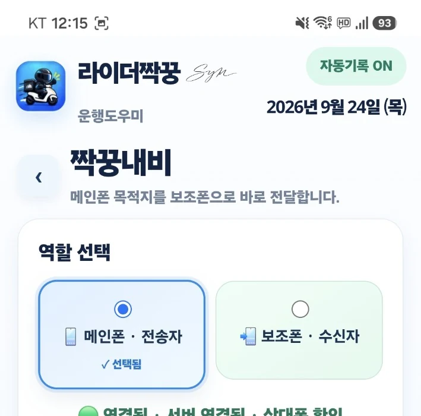

라이더짝꿍 포함 기능
짝꿍내비
메인폰에서 확인한 배달 목적지를 보조폰으로 보내 T맵 또는 카카오내비를 실행하는 기능입니다.
Actual Screen
실제 짝꿍내비 화면
메인폰·보조폰 역할 선택과 연결 상태를 실제 앱 화면에서 확인할 수 있습니다.
공개 홈페이지에는 페어링 QR과 페어링 코드를 노출하지 않도록 화면을 잘라서 사용합니다.

Flow
사용 흐름
역할 선택
메인폰과 보조폰을 구분합니다.
QR 페어링
최초 1회 QR로 연결합니다.
목적지 전송
배달앱 주문화면의 목적지를 확인해 보조폰으로 보냅니다.
내비 실행
보조폰에서 T맵 또는 카카오내비를 실행합니다.
짝꿍내비는 와이파이 핫스팟이나 블루투스 직접 페어링을 기본 방식으로 사용하지 않고, 인터넷을 통해 두 기기를 연결하는 구조입니다.
메인폰
- 배달앱 사용
- 목적지 확인
- 보조폰으로 전송
보조폰
- 목적지 수신
- T맵/카카오내비 실행
- 길안내 전용 사용 가능